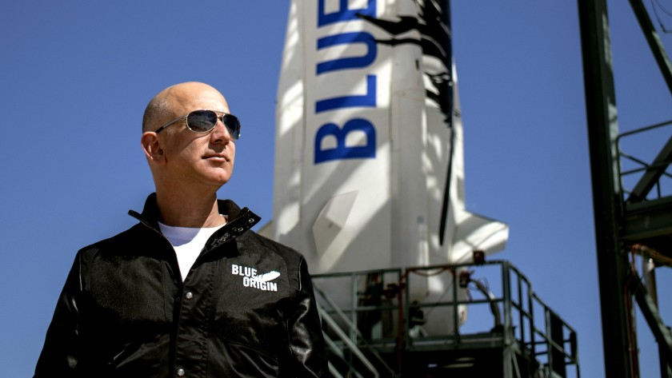

Jeff Bezos is a 57 year old man who started his career in program science and ended up becoming the richest man on Earth for some time. In late 1994 Jeff founded Amazon, an online bookstore but it would soon grow to be one of the world's biggest suppliers of goods ranging from food to toys and anything you can think of. In 2000 Jeff would start up Blue Origin, a human spaceflight start-up. In the year 2020 he would step down as CEO of Amazon and put all of his time into Blue Origin as they are preparing to bring people to space.
What did Jeff Bezos do for computer science? Well not only has he inspired many people to get into computer science but he also proves that programming can take you much farther then just sitting down in a chair all day writing code.How has he inspired people? To his success he has inspired many teens and adults to go into programming and he is bringing a whole new generation of programmers to the world of business. How has he shown you can do more stuff with programming then just sitting around? Jeff has shown that not only can you make a ton of money but you can also do crazy things, he went from delivering packages world-wide to now sending rockets with people into space. If doesn't doesn't show you programming isn't just a carriers of sitting down i don't know what will.
A brand for a company is like a reputation for a person. You earn reputation by trying to do hard things well. - Jeff Bezos